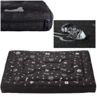
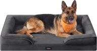
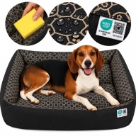
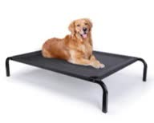
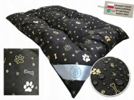
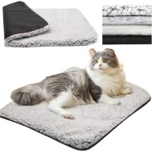
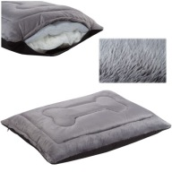
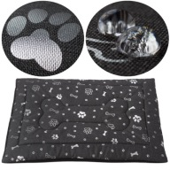
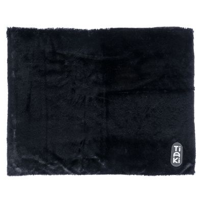
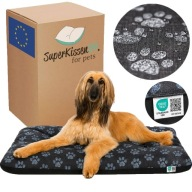

Ciepłe legowiska dla dwóch psów — izolacja od betonu/kafelek (dwór → garaż)
TL;DR — rekomendacja
Sytuacja: pies mały + pies średni. Teraz dwór (buda/kojec zadaszony), docelowo garaż (beton/kafele). Kluczowe = izolacja od podłoża.
Najlepsza strategia wg wiedzy z forów/weterynaryjnych: gruby materac z gęstą pianką z wodoodpornym spodem (≥6-12 cm) + opcjonalnie mata samonagrzewająca się na wierzch. Cienkie "mata termoizolacyjna z folią" jako jedyna warstwa = marketing — działa tylko jako dodatek. Na betonie alternatywą są podwyższone legowiska (dystans powietrzny), ale zimą przy braku ogrzania lepiej pianka + ciepły wierzch.
Zestaw budżetowy (~230-280 zł za oba psy):
- Średni pies: Welsti materac wodoodporny 100×70 (89 zł, 4.92★/4618 opinii) — legenda Allegro, ew. + mata samonagrzewająca 60×90 (63 zł) na wierzch = ~150 zł
- Mały pies: mata samonagrzewająca 50×40 (50 zł) + miękkie legowisko/kanapka S (35-90 zł na OLX/Allegro) = ~90-140 zł
Upgrade (~+250 zł): dla średniego Feandrea ortopedyczne wodoodporne 17 cm pianki (115-239 zł) — komfort + izolacja na lata.
Coverage — źródła
| Źródło | Status | Szczeble | Wynik |
|---|---|---|---|
| Allegro.pl | ✅ COVERED | Bright Data Web Unlocker (country=pl) | 332 unikalnych ofert, 6 fraz, ceny+oceny+zdjęcia |
| Amazon.pl | ✅ COVERED | web_fetch → Lightpanda CDP | ~250 ofert; uwaga: zdjęcia Amazon zablokowane (curl/BD/jina → 403), pozycje z Allegro mają miniatury |
| OLX.pl | ✅ COVERED | curl SSR (__PRERENDERED_STATE__) | 193+ listings, także używane i budy ocieplane |
| zooplus.pl | ✅ COVERED | web_fetch → Lightpanda CDP (port 9333) | 201 ofert dog-relevant |
| mediaexpert.pl | ✅ COVERED | Lightpanda | 25 ofert |
| zooart.com.pl | ✅ COVERED | Lightpanda | 30 ofert (m.in. komplet termoregulacyjny ThermoSwitch) |
| Castorama / OBI / Leroy Merlin | ❌ FAILED | web_fetch → curl → Lightpanda (DataDome 403) | Zablokowane po 3 szczeblach; kategoria podbudowana przez Allegro/Zooplus |
| Ceneo / fora / Reddit / YouTube (wiedza) | ✅ COVERED | web_fetch + curl | 20 źródeł — opinie marek, materiały, bezpieczeństwo |
🧠 Co realnie izoluje (z forów + weterynaryjnych)
- Najważniejsza warstwa = ta pod psem. Zimne podłoże (beton, deski) wybiera ciepło przez przewodzenie — potrzebna gęsta pianka ≥6-12 cm z wodoodpornym/hydrofobowym spodem.
- Mata samonagrzewająca (self-warming) odbija ciepło ciała (warstwa mylar/polar) — świetna jako warstwa WIERSZCHNIA, bez prądu, bezpieczna. Jako jedyna warstwa na betonie — za słaba.
- Podgrzewane maty elektryczne: tylko z termostatem + auto-off + kablem odpornym na przegryzienie (np. SnuggleSafe termofor — akumulujący ciepło w mikrosekundach po podgrzaniu w kuchence/w microfali, zero prądu w kojcu!). Zwykłego koca elektrycznego NIE wkładać.
- Unikać: taniej waty poliestrowej (spłaszcza się w tygodnie), rozmiaru "na styk" (marketing podaje wymiary zewnętrzne), plastikowych koszy bez wkładu.
- Higiena: pokrowiec zdejmowany pralny; odkurzać 1×/tydz, prać co 2-3 tyg (w budzie częściej — pchły/kleszcze).
- Marki z dobrym stosunkiem ceny/jakości (opinie): Welsti (4.92★/4618 na Allegro!), SuperKissen24 (4.87-4.90★, tysiące opinii), Feandrea (Amazon 4.5★). Średnio: TIAKI mata grzewcza 3.4★ — działa, ale oceny mieszane.
Średni pies — najlepsze oferty

Welsti materac wodoodporny 100×70 cm
89,00 zł 4.92★ (4618 opinii)wodoodpornepolecam jako baza
Najpopularniejsze legowisko wodoodporne na Allegro (378 osób kupiło ostatnio). Sprzedawca Welsti 99.8%. Idealny dla średniego psa; w garażu dodać mata samonagrzewającą na wierzch.

Feandrea ortopedyczne wodoodporne 104×69×17 cm
114,99 zł 4.5★Amazonpianka 17 cmspód antypoślizgowy
Gruba pianka ortopedyczna + wodoodporna warstwa wewnętrzna — najlepsza izolacja od betonu w tej cenie. (Zdjęcie: ten sam model Feandrea w rozmiarze 122×85.) Większy wariant: 122×85×17 — 141,99 zł.
Legowisko ortopedyczne wodoodporne 122×85×17 cm (kanapa)
238,99 zł 1.0★ (1)Allegrokastore-mp 99.2%
Duży materac ortopedyczny 17 cm — jeśli średni pies lubi się wyciągać. Mało opinii (nowość).

SuperKissen24 wodoodporna poduszka 120×90 cm
126,66 zł 4.90★ (3169 opinii)wodoodpornesprawdzona marka
Godna zaufania (3169 opinii), rozmiar XXL — dla średniego psa z zapasem. Tańszy wariant 100×70: 40,91 zł (4.89★/1324).

Nobleza podwyższone legowisko L 124×90 cm
89,99 zł 4.88★ (135 opinii)trampolinaizolacja od podłoża powietrzem
Podwyższona "trampolina" — pies leży nad zimnym betonem na przewiewnej matce. Najlepsza opcja gdy garaż bez ogrzania a pies nie grezie w kłębku. Zdejmowana tkanina do prania.

GoodPets posłanie 100×70 cm — odporne na wilgoć
54,99 zł 4.84★ (1675 opinii)budget pick
Tania, dobrze oceniona mata do kojca/budy. Sprzedawca natexsklep 97.7%.
Mały pies — najlepsze oferty

Mata samonagrzewająca 50×40 cm
49,99 zł 4.86★ (14 opinii, 33 kupiły ostatnio)bez prądudo każdej budy/legowiska
Self-warming: odbija ciepło ciała. Dla małego psa może być głównym posłaniem w budzie (mały pies = mało masy do ogrzania, mata pomaga). Większe: 70×46 — 55 zł.

Welsti PLUSZOWE legowisko 100×70 cm
69,99 zł 4.95★ (756 opinii)najcieplejszy wierzch
Puszyste, ciepłe — świetne do domu/garażu (nie do wilgotnej budy). Dla małego psa z dużym zapasem albo dla średniego.

Welsti mata wodoodporna 100×70 cm
48,99 zł 4.90★ (2228 opinii)uniwersalna
Tania mata wodoodporna — działa jako baza pod pluszowe legowisko małego psa (hybryda: wodoodporny spód + ciepły wierzch).
Izolacja / do budy — dodatki

TIAKI mata grzewcza BEZ prądu, 60×75 cm
49,96 zł 3.4★ (72 opinie — mieszane)zooplusXL 70×110: 81,96 zł
Do położenia W buzie pod posłaniem lub na wierzch materaca. Oceny mieszane — traktować jako dodatek, nie jedyną warstwę.

SuperKissen24 100×70 "ŁAPY" — wodoodporna
40,91 zł 4.89★ (1324 opinie)best value99 736 szt. dostępnych
Najlepszy stosunek cena/jakość w całym researchu — do kojca, garażu, domu.
OLX — okazje i używane
- Bedsure 110×89 wodoodporne — 50 zł (nowe!), Kielce, 02.10 — okazja dla średniego psa
- Jiupety izolowane legowisko-jaskinia z ramą — 252,93 zł Amazon — dla małego psa, zamknięte = cieplejsze (4.0★)
- Domek/jaskinia dla małego psa: 35-139 zł nowe na OLX
- Buda ocieplona (izolacja od ziemi): od 219 zł nowe — jeśli buda obecna jest nieocieplona, to może być lepsza inwestycja niż samo legowisko
Gotowe zestawy
| Zestaw | Dla | Koszt | Elementy |
|---|---|---|---|
| BUDŻET | średni + mały | ~230 zł | Welsti wodoodporne 100×70 (89) + mata samonagr 60×90 (63) + mata samonagr 50×40 (50) + mata Welsti pod małego (49) |
| KOMFORT | średni + mały | ~370 zł | Feandrea ortopedyczne 104×69×17 (115) + mata samonagr XL (82) + Welsti pluszowe dla małego (70) + mata samonagr 50×40 (50) |
| GARAŻ-WORKHORSE | średni | ~200 zł | Nobleza podwyższone L 124×90 (90) + SuperKissen24 100×70 na wierzch/pod spód (41) — dystans powietrzny + miękka warstwa |
Metodologia
4 scraper-agenci (DeepSeek V4.1 Flash) równolegle: Allegro (Bright Data, 6 fraz), Amazon.pl+OLX (Lightpanda/curl SSR), sklepy zoo (web_fetch→Lightpanda), warstwa wiedzy (20 źródeł: fora PL, Reddit, artykuły weterynaryjne, Ceneo-snippety, Amazon.de opinie). Destylaty: memory/research/legowisko-psa-2026-10/raw/. Ceny z 28.10.2026 — mogą się zmienić. Zdjęcia Amazon zablokowane (403 na 3 metodach) — dla Feandrea użyto zdjęcia tego samego modelu z Allegro.
Sources: allegro.pl · amazon.pl · olx.pl · zooplus.pl · mediaexpert.pl · zooart.com.pl · fora: gazeta.pl, zoofaster.pl, r/dogs · dogster.com (heated beds safety)